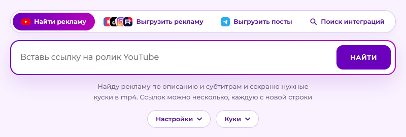

wibuploads находит рекламу в видео на YouTube и сохраняет нужные куски в mp4. Ещё умеет скачивать видео из соцсетей, сохранять посты Telegram картинками и искать выпуски блогеров с нужным брендом. Всё работает на твоём компьютере.

Читает описание и субтитры, показывает рекламные куски с таймкодами. Ты отмечаешь нужные, а сервис режет их в mp4.
Скачивает видео из VK, TikTok, Instagram* и Rutube целиком, горизонтальные и вертикальные, в папку с именем блогера.
Сохраняет пост Telegram картинкой JPG. Если пост удалили, ищет его копию в веб-архиве.
Вписываешь блогеров и бренды, получаешь ссылки на выпуски и объяснение, почему они подошли: ссылка, промокод, erid.
Не получается? В README лежит готовый текст для ChatGPT: он проведёт по шагам и поможет разобраться с ошибкой.